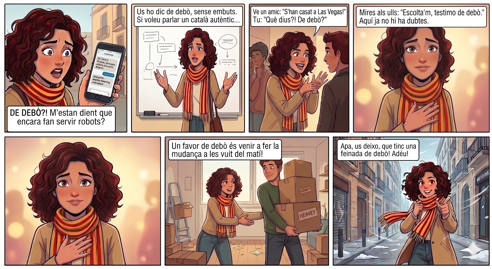

M’estan dient que encara hi ha gent que fa servir traductors automàtics per parlar de sentiments?
Us ho dic de debò, sense .
Si voleu parlar un català , heu de dominar aquesta expressió.
Ve un amic i et deixa anar la de l’any.
I pum, ja tens la que estaves buscant.
Aquí ja no hi ha , no hi ha jocs.
Els amics de debò venen a ajudar-te a fer la .
S’està girant una ...
Us farà sonar com uns autèntics .
Tinc una de debò!
1. “De debò?! No m’ho puc creure!”
2. “T’estimo de debò.”
3. “Avui fa un fred de debò.”
4. “Amics de debò.”
5. “Ho dic de debò.”
De debò?! No m'ho puc creure. M'estan dient que encara hi ha gent que fa servir traductors automàtics robotitzats per parlar de sentiments? De debò?!
Mireu, us ho dic de debò, sense embuts. Si voleu parlar un català autèntic, dels que es parlen al carrer i no a un diccionari del segle passat, heu de dominar aquesta expressió. No és cap broma, ho dic de debò!
Imagina't la situació. Ve un amic i et deixa anar la xafarderia de l'any: “Escolta, que en Joan i la Marta s'han casat en secret a Las Vegas!”. Tu què fas? No li dius “Ah, sí? Certament?”. No, home, no! T'hi tires a sobre i li preguntes: “Però què dius?! De debò?!”. I pum, ja tens la confirmació que estaves buscant.
Però és que, a més, té un punt de veritat que arriba al cor. Si tu li dius a algú “T'estimo”, està bé, d'acord. Però si li mires als ulls i li dius: “Escolta'm, t'estimo de debò”, canvia completament. Aquí ja no hi ha dubtes, no hi ha jocs. És la veritat absoluta.
I el millor de tot és quan vols descriure la realitat tal com és. Perquè a la vida hi ha problemes... i després hi ha problemes de debò. D'aquells que et fan rumiar a la nit. Igual que hi ha coneguts de festa... i amics de debò, dels que venen a ajudar-te a fer la mudança un diumenge a les vuit del matí. Això sí que és un favor de debò!
Ostres, de fet... s'està girant una brisa... avui fa un fred de debò, eh? Més vale que vagi acabant.
Així que ja ho sabeu. Comenceu a fer servir el “de debò” a partir d'ara mateix. Us farà sonar com uns autèntics nadius. Apa, us deixo, que tinc una feinada de debò! Adéu!